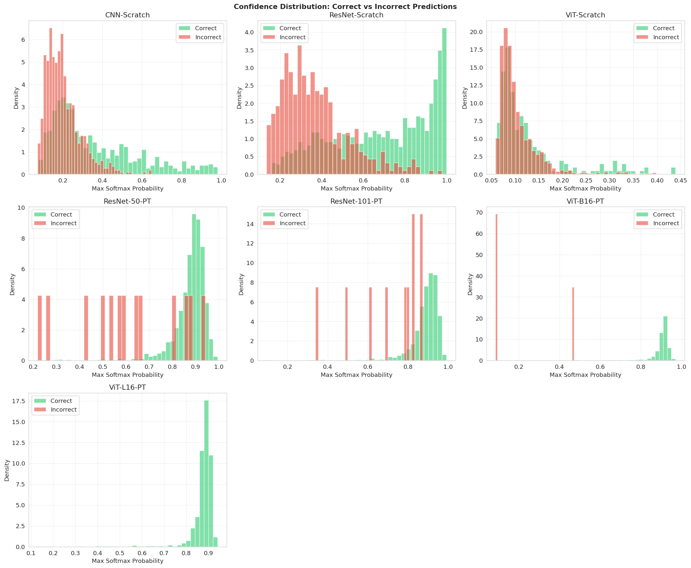
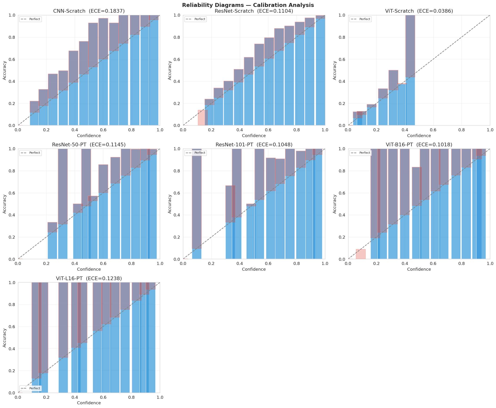

Errors
Error analysis & calibration
Confidence calibration, reliability, and common confusions across seven models (3 scratch, 4 pretrained).
Sources: Section 11 of the image notebook; figures from
assets/image.
Confidence
Confidence distributions
Correct vs incorrect prediction confidence across models.

Confidence distribution
Correct (green) vs incorrect (red) predictions; overconfidence visible in scratch models.
Calibration
Reliability diagrams & ECE
Calibration quality per model.

Reliability diagrams
Per-model gap between predicted confidence and accuracy (ECE annotated).
| Model | ECE | Notes |
|---|---|---|
| ViT-Scratch | 0.039 | Lowest ECE — near-random confidence looks calibrated. |
| ViT-B16-PT | 0.102 | Mild overconfidence at high confidence. |
| ResNet-101-PT | 0.105 | Mild overconfidence. |
| ResNet-Scratch | 0.110 | Moderate overconfidence. |
| ResNet-50-PT | 0.115 | Moderate overconfidence. |
| ViT-L16-PT | 0.124 | Slightly overconfident despite high accuracy. |
| CNN-Scratch | 0.184 | Most overconfident on incorrect predictions. |
Confusions
Top confused class pairs (CNN-Scratch)
Most frequent misclassifications in the weakest model.
| True class | Predicted class | # Samples |
|---|---|---|
| American Staffordshire | Afghan Hound | 29 |
| Irish Wolfhound | Afghan Hound | 23 |
| Bullfrog | American Alligator | 22 |
| Water Ouzel | Red-backed Sandpiper | 21 |